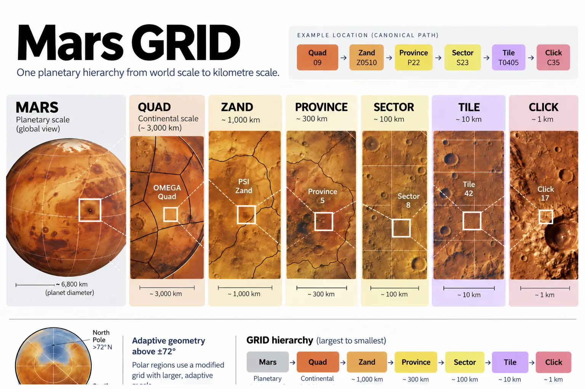

The Mars Grid in One Page
The Spatial Skeleton of Matlas
The answer is Mars GRID.
GRID is the two-dimensional spatial structure inside Matlas: one persistent hierarchy covering the entire Martian surface, from planetary geography down to areas roughly a kilometre across.
Its architecture is:
Mars → Quad → Zand → Province → Sector → Tile → Click
That is the reveal.
Read it as a controlled zoom. Quads provide the broadest orientation, spanning thousands of kilometres. Zands and Provinces move through major regional scales. Sectors bring the hierarchy into tens of kilometres; Tiles into several kilometres; and Clicks into roughly kilometre-scale civil geography.
A location therefore has one path through GRID. It lies in one Quad, one Zand within that Quad, one Province within that Zand, then one Sector, one Tile and finally one Click.
The names are new.
The idea should now be familiar.
One place, one path

Read a description of this illustration
The seven displayed hierarchy labels are Mars, Quad, Zand, Province, Sector, Tile and Click. The worked path is shown as nested levels, not as seven independent location registries. Lower annotation panels in this image master are cropped.
The identifier is worth looking at once because it shows the structure in another form.
MGRID:1:MARS identifies the system and the world. What follows is the geographic path: Q09, then Z0510, P22, S23, T0405 and finally C35.
There is no need to learn that syntax now. The point is simply that a GRID location is structured rather than assigned one enormous planetary serial number. The same location can be referred to broadly or precisely while remaining inside the same hierarchy.
That is all we need from the identifier for the moment.
One hierarchy, two geometries
Across most of Mars, GRID uses the straightforward angular geometry chosen in Chapter 8. Its boundaries follow latitude and longitude, keeping the civil structure close to the coordinate system underneath it.
At 72° north and south, the geometry changes regime.
The hierarchy does not:
Quad → Zand → Province → Sector → Tile → Click
What changes is the east–west subdivision. As longitude converges towards the poles, GRID adapts its geometry rather than allowing comparable units to collapse into increasingly narrow strips.
How it does that can wait.
For now, the architectural point is enough: regular Mars and polar Mars use different local geometry inside the same global hierarchy.
That is Mars GRID.
One planet, divided through six nested civil scales.
Straightforward angular geography where the simple rule works.
Adaptive geometry where Mars refuses to cooperate.
Mars → Quad → Zand → Province → Sector → Tile → Click